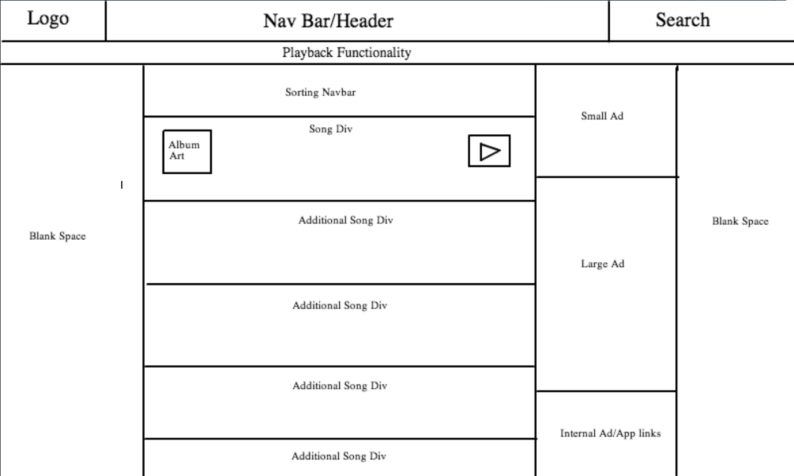

Website 1: The New York Times
This webpage is solving the problem of delivering news to the world. Or as the NY Times puts it, delivering "All the news that's fit to print". The main visual challenge is delivering so much content - tons of basically plain text - without looking cluttered or overwhelming. I find they have split almost every part of the page into thirds, some sections take up two thirds while another takes up the remaining one. This wireframe was created in collaboration with Jeff Kynaston during our first pairing session on 4/5/14.

Website 2: The Hype Machine
This webpage is solving the problem of putting together popular music from blogs across the internet. Instead of scouring hundreds of music blogs users can simply go to The Hype Machine to see what the freshest music on the internet is. The main visual challenge is to make each track stand out without being overwhelming. Also the playback functionality has to be intuitive and span across multiple pages (visiting a new page on the site shouldn't stop playback).
Website 3: Fancy
The Fancy solves the problem of displaying and selling cutting edge products for your home and life. The main visual challenge is displaying mostly large images in a continuous flow without being cluttered. Fancy makes this look easy with their incredibly minimalistic, clean design.